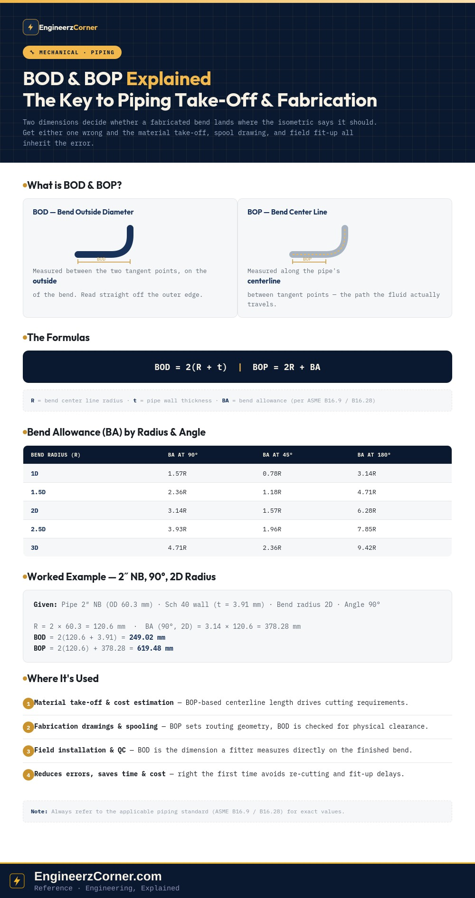

Every fabricated pipe bend has two tangent points — the spots where the straight pipe stops and the curve begins. How you measure the distance between those two points depends on what you're measuring for, and that's the entire distinction between BOD and BOP. Mix them up on a material take-off or a spool drawing and the error compounds through cutting length, fit-up, and field installation.

BOD and BOP defined, the governing formulas, a bend allowance table by radius and angle, and a worked 2″ NB example.
1. BOD — Bend Outside Diameter
BOD is the distance between the two tangent points of a bend, measured on the outside of the curve. It's the dimension a fabricator reads directly off the outer edge of the pipe when checking a bend against a drawing, which makes it the natural reference for fit-up and visual verification on the shop floor.
2. BOP — Bend Center Line
BOP is the distance between the same two tangent points, but measured along the pipe's center line before and after the bend — not the outside edge. Because it tracks the centerline path the fluid actually travels, BOP is the dimension that drives layout geometry, routing length, and isometric take-off.
3. The formulas
BOD only needs the bend radius and the wall thickness, because it's a simple outside-edge measurement. BOP needs the bend allowance instead, because the centerline path isn't a straight radius sum — it depends on how much extra centerline length the bend angle itself consumes.
4. Bend Allowance (BA)
Bend Allowance is the extra length required to make a bend without shortening the pipe's developed length. It scales with the bend radius and the bend angle, and standard references such as ASME B16.9 tabulate it as a multiple of R for common radii and angles:
| Bend Radius (R) | BA at 90° | BA at 45° | BA at 180° |
|---|---|---|---|
| 1D | 1.57R | 0.78R | 3.14R |
| 1.5D | 2.36R | 1.18R | 4.71R |
| 2D | 3.14R | 1.57R | 6.28R |
| 2.5D | 3.93R | 1.96R | 7.85R |
| 3D | 4.71R | 2.36R | 9.42R |
5. Worked example — 2″ NB, 90° bend, 2D radius
Given a 2″ NB pipe (60.3 mm OD), Schedule 40 wall (3.91 mm), bent to a 2D radius through 90°:
| Quantity | Value |
|---|---|
| R = 2D | 2 × 60.3 = 120.6 mm |
| t | 3.91 mm |
| BA (90°, 2D) | 3.14R = 3.14 × 120.6 = 378.28 mm |
| BOD = 2(R + t) | 2 × (120.6 + 3.91) = 249.02 mm |
| BOP = 2R + BA | 2 × 120.6 + 378.28 = 619.48 mm |
Notice how different the two results are for the same bend — roughly 249 mm outside edge to outside edge, versus roughly 619 mm along the centerline path. Using one where the other belongs isn't a rounding error; it's hundreds of millimeters off.
6. Where each one is actually used
- 1Material take-off & cost estimation — centerline-based quantities (BOP) determine developed pipe length and cutting requirements.
- 2Fabrication drawings & spooling — both dimensions appear on isometrics; BOP sets routing geometry, BOD is checked against physical clearance.
- 3Field installation & quality control — BOD is the dimension a fitter can measure directly with a tape on the finished bend.
- 4Reduces errors, saves time and cost — getting BOD/BOP right the first time avoids rework, re-cutting, and fit-up delays.
Key takeaways
- ✓BOD is measured on the outside of the bend, between tangent points — BOD = 2(R + t).
- ✓BOP is measured along the centerline, between tangent points — BOP = 2R + BA.
- ✓Bend Allowance (BA) scales with radius and bend angle, and is tabulated in standards such as ASME B16.9 / B16.28.
- ✓The two dimensions can differ by hundreds of millimeters on the same bend — using the wrong one is not a rounding error.
- ✓Accurate BOD/BOP feed material take-off, cost estimation, fabrication drawings, spooling and field quality control.